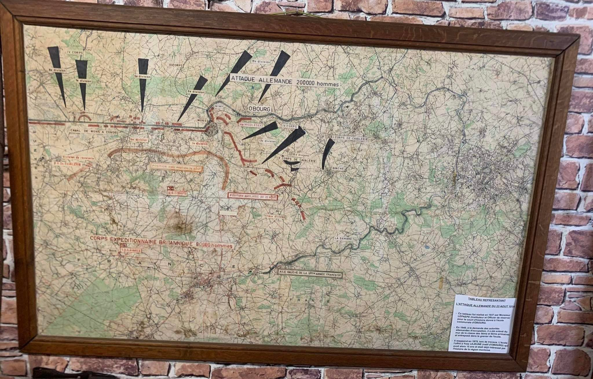

Le Musée de la Libération permet aux écoles de faire des visites en semaine sur rendez-vous.
Venez avec vos élèves découvrir l'histoire des deux guerres mondiale, ces événements qui ont changé le monde pour toujours. En visitant notre musée, vous pourrez mieux comprendre les causes et les conséquences des ces guerres, ainsi que les perspectives et les expériences des personnes impliquées.
L'étude des deux guerres mondiales à l'école est essentielle pour développer une meilleure compréhension de l'histoire du monde et de ses dynamiques actuelles. Cela peut également nous aider à éviter de futures tragédies et à développer des compétences utiles dans la vie professionnelle et personnelle.
Professionnels de l'enseignement, n'hésitez pas à nous concater pour programmer la visite de notre musée. Faites découvrir à vos élèves l'importance de ces événements dans l'histoire du monde. Nous vous attendons!
